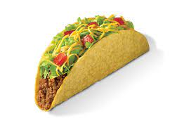

Taco Recipe

Description
This is an incredible recipe that makes for some amazing tacos! All the ingredients add together to satisfy your hunger!
Ingredients
- Meat
- Tortillas
- Onions
- Tomato
- Iceberg Lettuce
- Taco Sauce
Steps
- Make a taco mold by rolling out aluminum foil and folding it over in 10-inch increments until you have a 4-sheet-thick piece of foil. Fold the large foil square in half horizontally, bringing the bottom to the top, and then turn 90 degrees. Crimp over the top and bottom edges by 1 inch, and then fold over the sides by 1 inch. Place the aluminum foil roll or a narrow rolling pin into the center of the foil square and bring the sides together to create a hollow, narrow tube to mold the taco, making sure it can stand up on the long side.
- Heat the oven to 250 degrees F.
- Heat the peanut oil in a 12-inch cast iron skillet over medium heat until it reaches 350 degrees F on a deep-fry thermometer, about 5 minutes. Adjust the heat to maintain the temperature.
- Shape 1 tortilla around the aluminum foil mold, forming a taco shape. Use tongs to hold up the sides against the mold and put the bottom of the tortilla into the hot oil and fry for 20 seconds. Lay 1 side of the tortilla down in the hot oil and fry for 30 seconds. Flip the tortilla over and fry for an additional 30 seconds. Remove the taco shell to a cooling rack set over a newspaper lined half sheet pan and cool for 30 seconds before removing the mold. Sprinkle the hot tortillas with kosher salt, to taste. Repeat frying procedure with the remaining tortillas. Keep the taco shells warm in the heated oven while preparing the filling.
- Drain all but 2 tablespoons of the peanut oil from the skillet and return to medium heat. Once the oil shimmers, add the onion and cook until softened and lightly browned around the edges, about 3 to 4 minutes. Add the ground meat, 1 teaspoon salt, and garlic. Cook until browned, about 3 to 4 minutes, stirring occasionally, to break up the meat. Add Taco Potion and beef broth. Bring to a simmer and cook, uncovered, until sauce is slightly thickened, 2 to 3 minutes.
- Assemble each taco with meat mixture, panela, jalapeno slices, lettuce, tomatoes, and cilantro. Serve immediately.